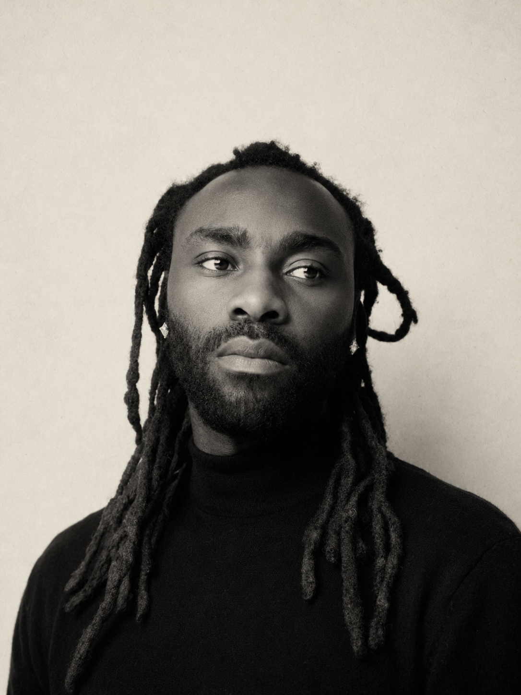
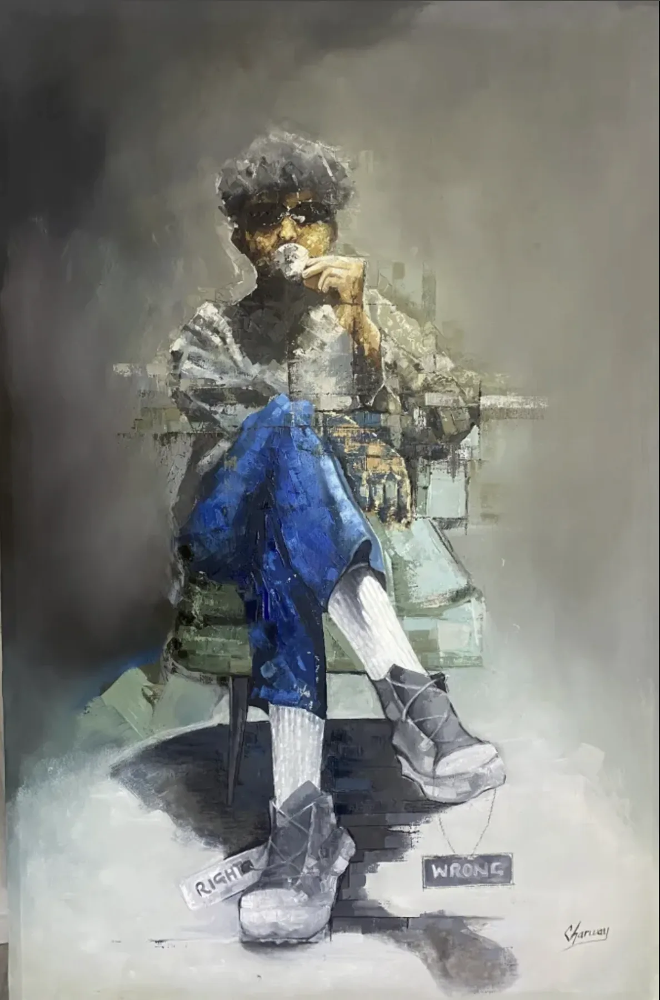
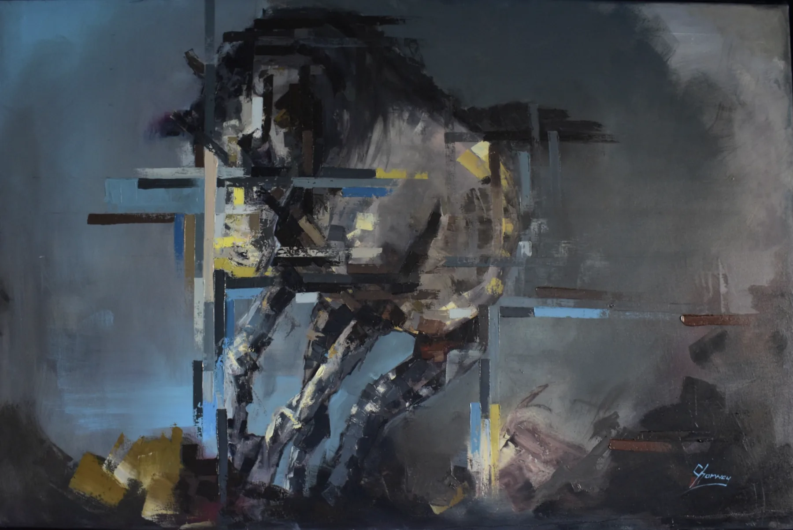
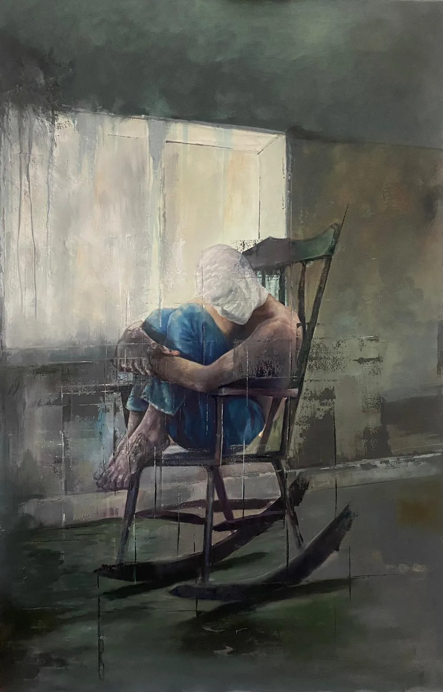
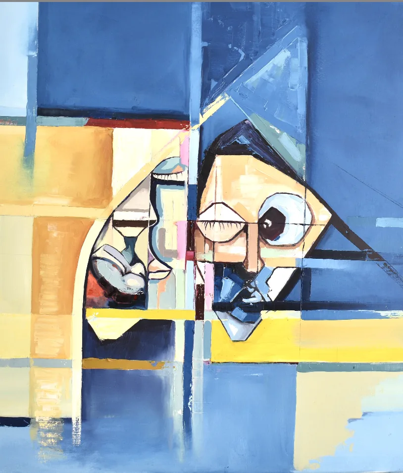
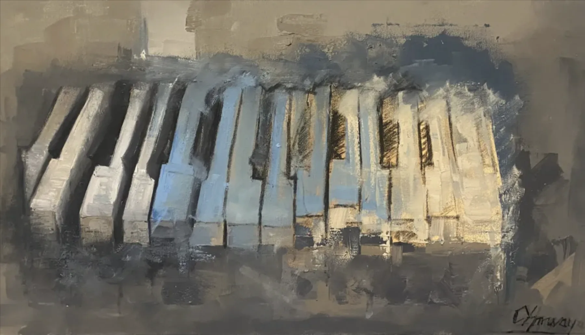
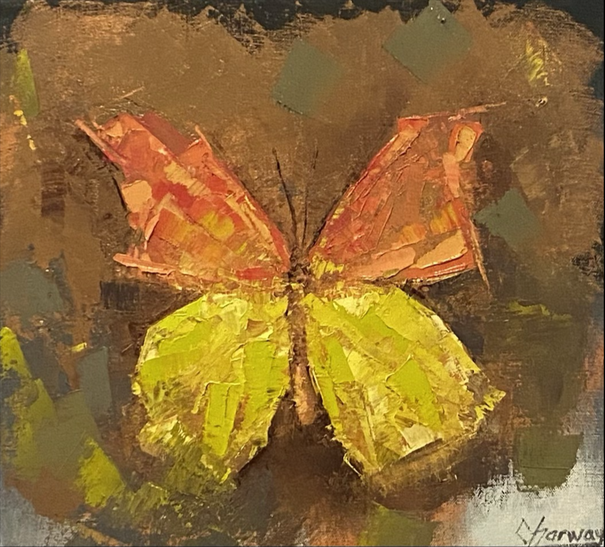
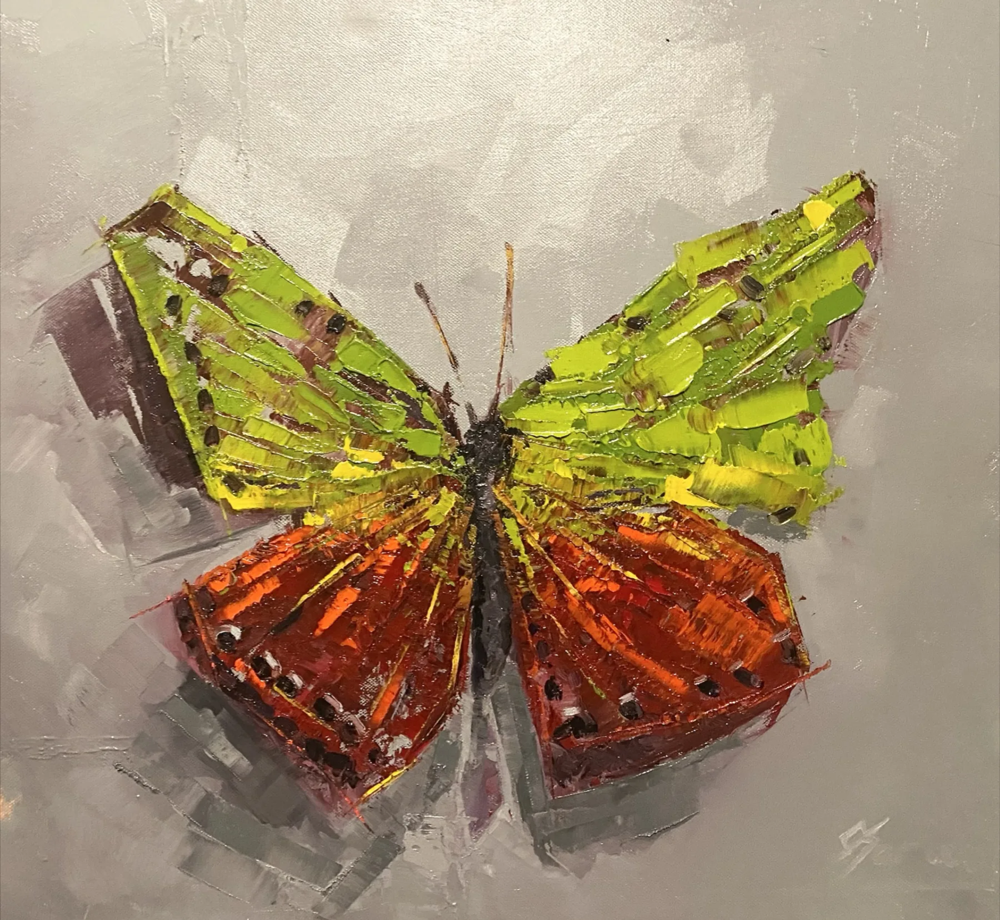

Charway

Contemporary Artist
Ausgewählte Werke
-

↗Right & WrongÖl & Mixed Media auf Leinwand -

↗Echo (Atelier IV)Öl auf Leinen -

↗Stillness, n° 3Öl auf Leinen -

↗Figure in BlueMixed Media auf Leinwand -

↗Keys at MidnightÖl auf Holz -
 ↗TracesÖl & Kohle auf Leinen
↗TracesÖl & Kohle auf Leinen -

↗Wings, n° IÖl auf Leinwand -

↗Wings, n° IIÖl auf Leinwand
Über mich
Ich bin Enock Osei Charway, bekannt als Enock Maguru. Geboren in Ghana, arbeitend in Deutschland.
Kunst ist für mich der Ausdruck menschlicher Kreativität und Vorstellungskraft – in Malerei, Skulptur, Musik, Literatur und Tanz. Werke, die um ihrer Schönheit und ihrer emotionalen Kraft willen empfunden werden sollen. Fußball gehört für mich ebenso dazu. Ich habe ein Diplom in Bildender Kunst und begegne dem Spiel mit derselben Hingabe wie dem Pinsel. Ich schätze das Leben, und ich lebe es durch Zeichnen, Malen und das Spiel auf dem Platz.
Praxis
Über die Formen hinweg- Bildende Kunst, Diplom Malerei
- Zeichnung & Mixed Media Atelier
- Fußball Spielfeld
Auch bekannt als Enock Maguru. Einfach den Namen suchen.
Eine Leinwand und ein Spielfeld sind dasselbe Feld. Du gibst alles hinein, und die Linie entscheidet, was bleibt.
Auftragsarbeiten
Eine kleine Anzahl von Auftragsarbeiten pro Jahr. Porträts, Figuren und private Sammlungen – entstanden in einem ruhigen, persönlichen Prozess, vom ersten Gespräch bis zum fertigen, gerahmten Werk.
-
Schritt01
Gespräch
Ein erstes Gespräch. Wir besprechen die Idee, das Format, den Raum, in dem das Werk leben wird, und den Zeitrahmen. Persönlich oder per Video.
-
Schritt02
Sitzungen & Referenzen
Sitzungen, Skizzen, fotografische Referenzen und manchmal eine erste Ölstudie, um die Richtung abzustimmen.
-
Schritt03
Das fertige Werk
Fertiggestellt im Atelier, firnisst und gerahmt, anschließend persönlich übergeben. Weltweiter Versand.